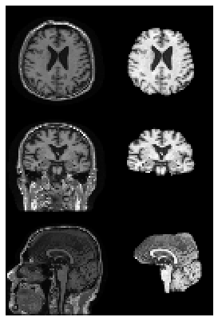
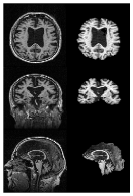
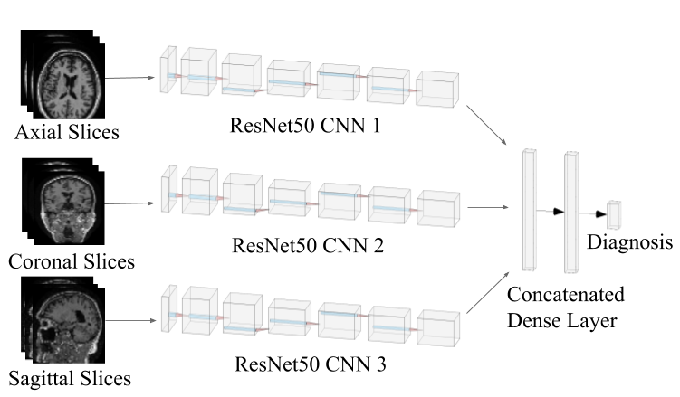

Diagnosing Alzheimer’s Disease using Deep Learning
An MRI based CNN architecture to diagnose Alzheimer's Disease using CycleGAN data augmentation. Serves as both a medical tool and a proof of concept for the use of GANs in data augmentation.

An MRI based CNN architecture to diagnose Alzheimer's Disease using CycleGAN data augmentation. Serves as both a medical tool and a proof of concept for the use of GANs in data augmentation.
Two types of preprocessing were tested: Skull Stripping and TorchIO transforms. A sample without Alzheimer's is shown on the left and a sample with Alzheimer's is shown on the right. In each image, the first column is the original, the second column is with skull stripping, and the third column is with TorchIO transforms.
Skull Stripping:
 I used transfer learning with ResNet50 as the pretrained model. The model takes in three images as input, which are each fed through a ResNet50 CNN, and concatenated into a dense layer. Dropout is then applied and the final layer returns the diagnosis.
The model was fine-tuned using the Adam optimizer with a learning rate of 0.0001, and trained for 50 epochs with a batch size of 32. A training, validation, and testing split of 80%-10%-10% was used. Models were evaluated based on accuracy, precision, recall, and F1 score.
